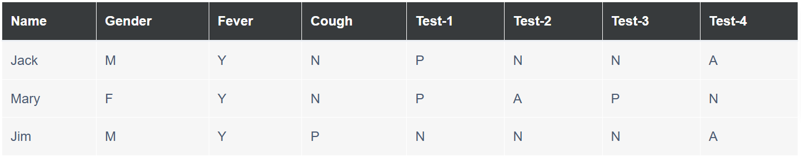
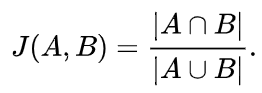

Code - Jaccard Coefficient

In Unit 5, as a formative actvity, we were asked to calculate a Jaccard coefficient for subgroups made of provided dataset of three people: Jack, Mary and Jim (see below).
See the code with commentary and outcomes.
Jaccard coefficient is a measure of similarity of two subsets. The coefficient equals the power of sets common part divided by the power of sum of these sets:
When Jaccarrd coefficient approaches 1, the sets are equal, while when 0, the sets are totally divergent.
The task it to calculate this indicator for the following pairs:
- Jack, Mary = {common elements: 3} / {sum of elements:
- Jack, Jim
- Jim, Mary